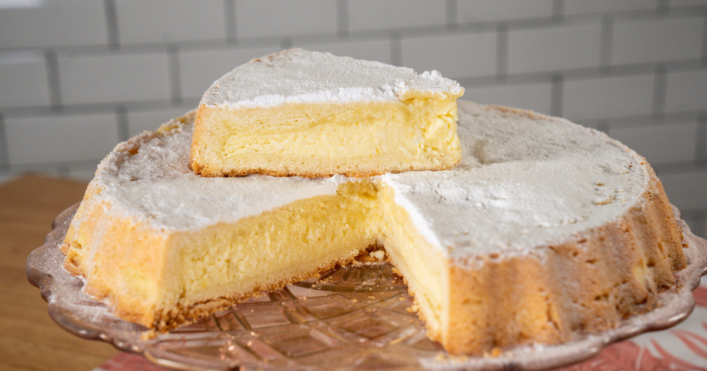

Torta de ricota
Ingredientes
- 500g de ricota fresca.
- 200g de azucar.
- 100g de harina 0000.
- 3 huevos.
- Ralladura de limón.
- 1 cuxcharadita de extracto de vainilla.
- Una pizca de sal.
- Azucar impalpable para decorar
Preparación
- Precalienta el horno a 175ºC y engrasa un molde para torta.
- En un bol grande, mezcla la ricota con el azucar y la de limón.
- Añade los huevos uno a uno, asegurándote de incorporar bien despues de cada adición.
- Integra la harina tamizada y la sal, mezclando hasta obtener una masa homagénea.
- Vierte la mezcla en el molde preparado y alisa la superficie con una espátula.
- Hornea durante 45 minutos o hasta que al insertar un palillo en el centro, este salga limpio.
- Deja enfriar en el molde durante 10 minutos antes de desmoldar.
- Espolvorea con ázucar impalpable antes de servir.
